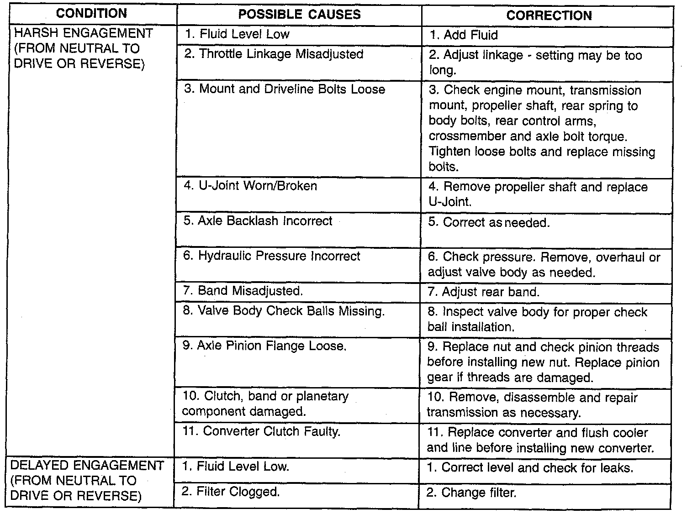
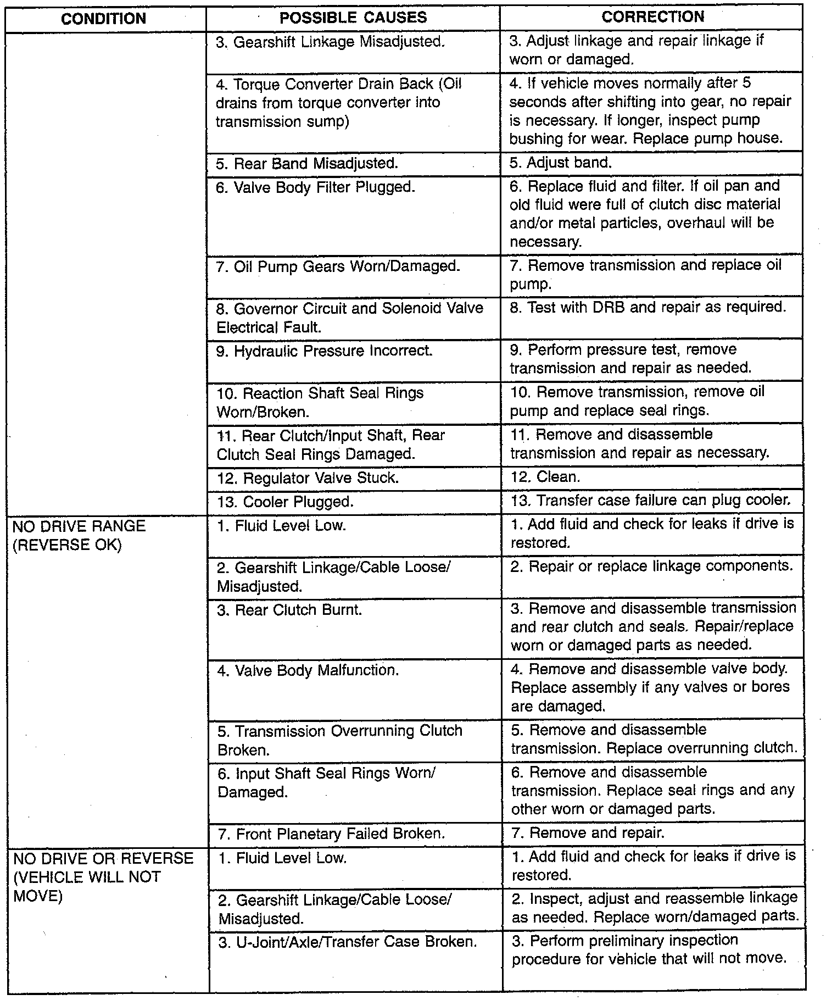
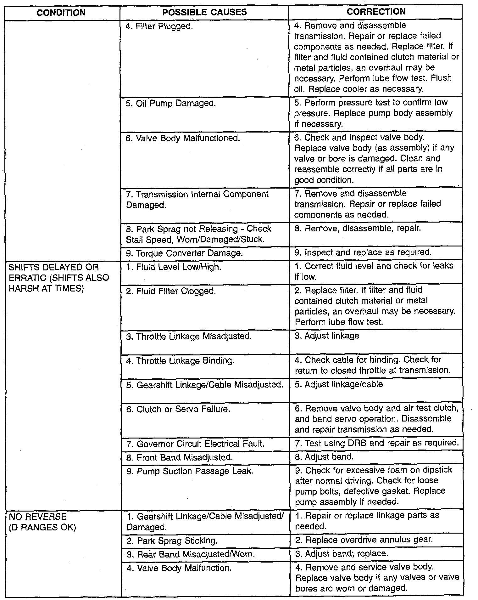
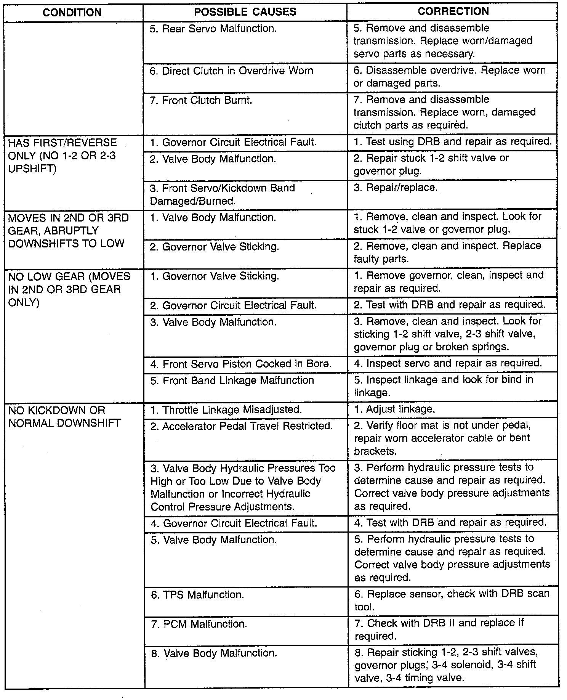
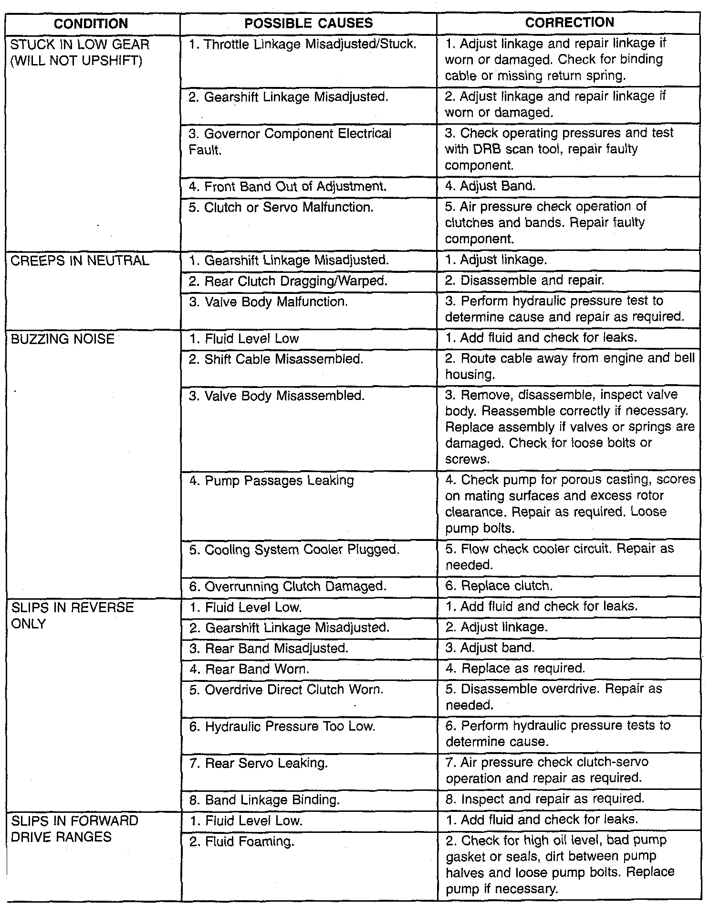
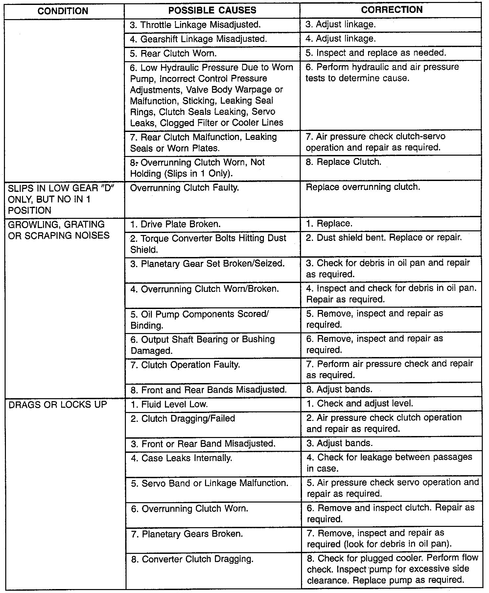
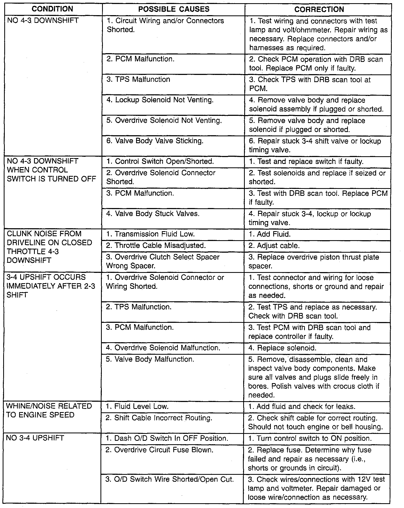
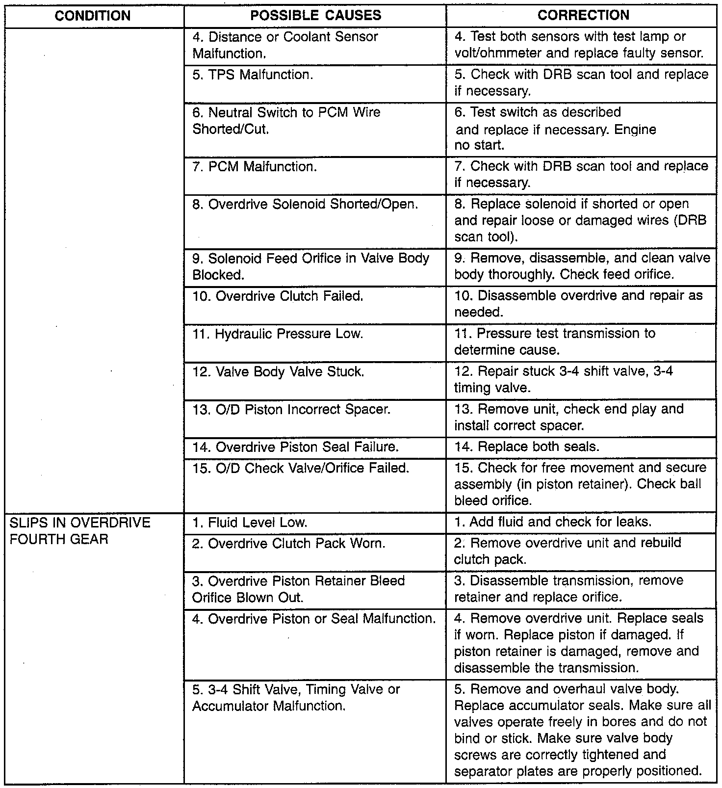
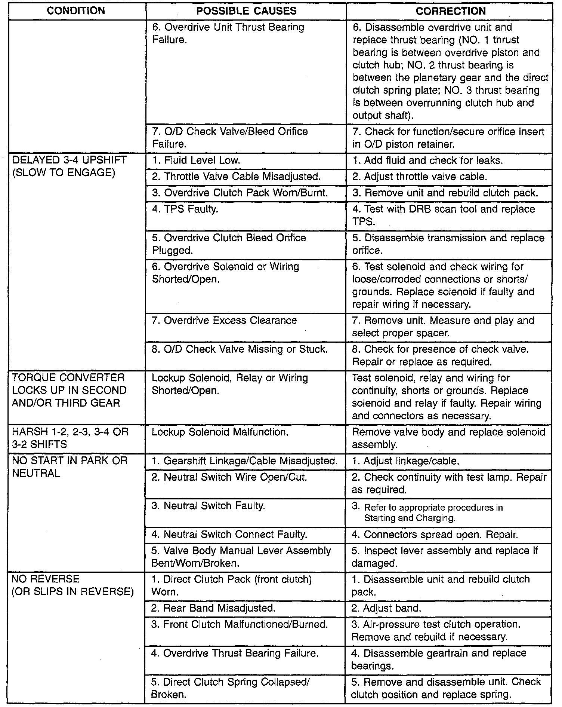
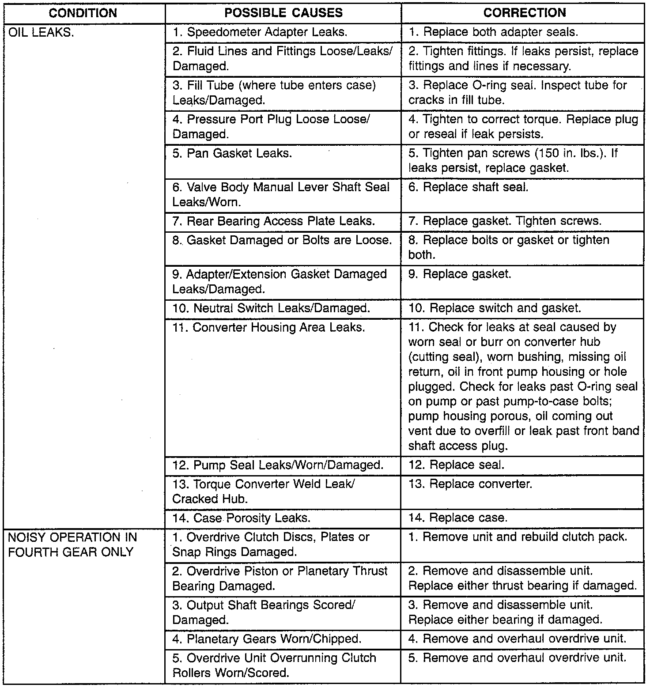

Symptom Related Diagnostic Procedures










The diagnosis charts provide additional reference when diagnosing a transmission fault. The charts provide general information on a variety of transmission. overdrive unit and converter clutch fault conditions.
The hydraulic flow charts in the Schematics and Diagrams, outline fluid flow and hydraulic circuitry. Circuit operation is provided for neutral, third, fourth and reverse gear ranges. Normal working pressures are also supplied for each of the gear ranges.